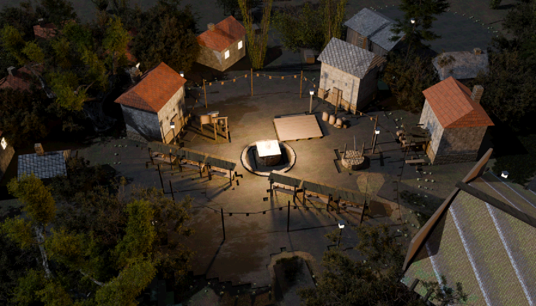
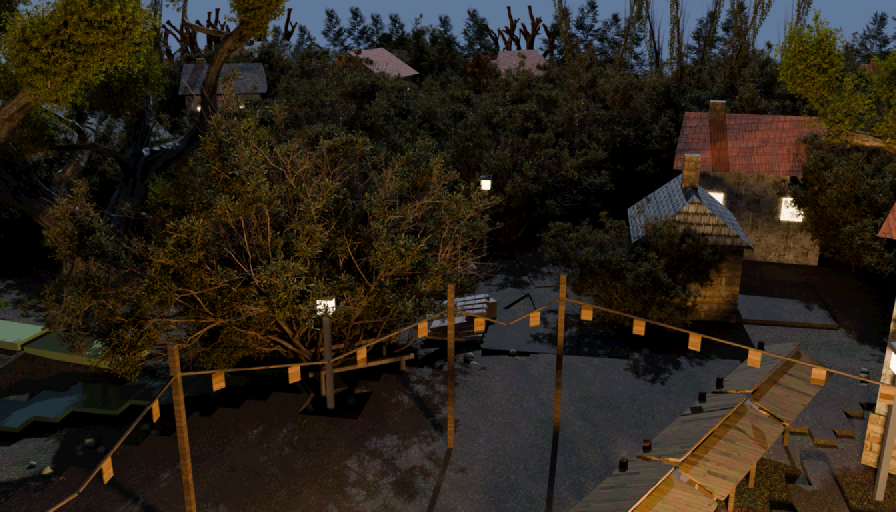
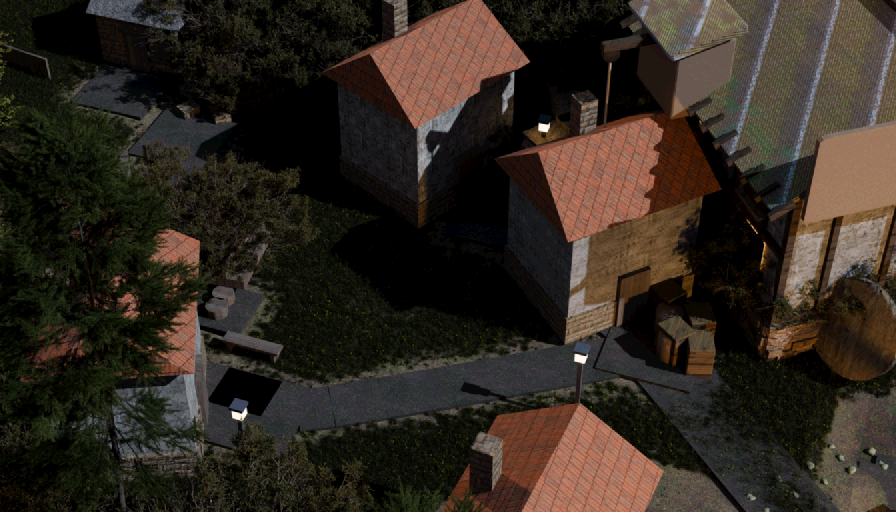
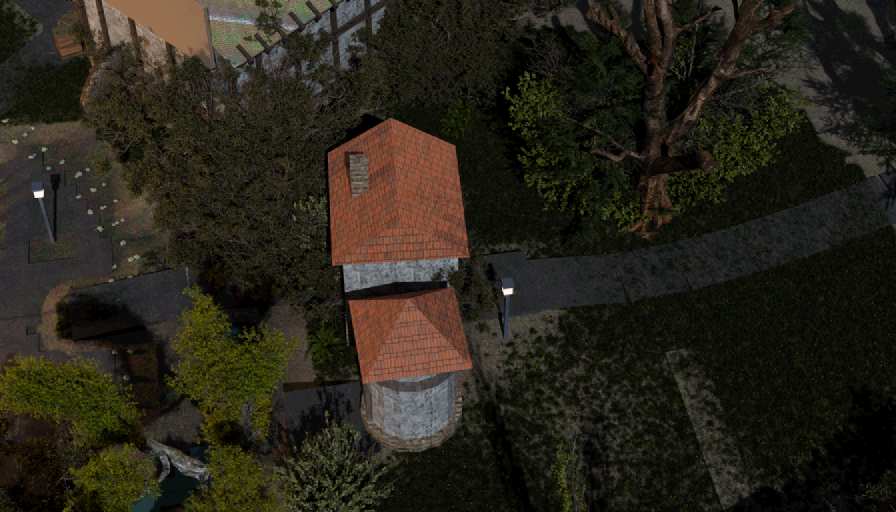

Scene red-team — emberbrook
20260806-2-emberbrook-checklist · judge gemini:gemini-3.6-flash (replayed from run-tmp-qv-emb + run-tmp-qr-emb) (pinned) ·
11 plates · checklist · naive N=3 ·
generated 2026-08-07T01:50:27.735Z by tools/scene_redteam.mjs · plates baked 2026-08-02T11:41:56Z .. 2026-08-02T22:57:09Z1 The prompts, verbatim
Exactly what each judge call was asked (judge gemini:gemini-3.6-flash (replayed from run-tmp-qv-emb + run-tmp-qr-emb), pinned) —
read these first; everything below is these prompts' output. The naive prompt is fixed for the whole
run; the checklist and sceptic prompts are templates filled per plate — shown here filled with this
run's own data. The style paragraph switches between art and blockout mode; this run used
art mode, and that is the version shown.
Stage 1 — the naive critic (every plate, each of the N looks)
You are a first-time player. The image is one frame of a video game, exactly what is on
screen. You have never been here, you have no map, and nobody has told you anything.
Critique this frame. Report anything that would make the place HARD TO UNDERSTAND or
HARD TO PLAY. Use exactly these category tokens:
navigation — you would not know where to go, or the way on is ambiguous
occlusion — something blocks your understanding of the space
geometry — incomplete, stray, floating, clipping, or plainly ugly geometry
exit — a door or way out that does not read as a door or a way out
immersion — floating objects, z-fighting, wrong scale, anything that breaks belief
The scene is a finished hand-stylised illustration; a painterly or simplified look is
the intended art style and is not a problem in itself.
RULES. Report only things you can actually point at in this image. Do NOT invent
problems to fill the list, and do NOT list matters of taste. If the frame is fine,
return an empty list — that is a valid and useful answer. At most 6 findings.
severity: 3 = a player would be stuck or would think the game is broken, 2 = clearly
wrong but survivable, 1 = a blemish.
Answer with JSON only, in this exact shape:
{"findings":[{"category":"occlusion","where":"a few words locating it in the frame",
"bbox":[x0,y0,x1,y1],"severity":2,"desc":"one sentence"}]}
bbox is in normalised image coordinates: x 0 at the left edge and 1 at the right, y 0
at the top edge and 1 at the bottom.Stage 1 — the checklist auditor (filled for plate "square", 30 items derived from the map/ownership contract)
You are auditing one frame of a video game. The designer says the things listed below
are in this shot and that a player should be able to find them. For EACH item, decide
which of these four is true, using the exact token:
FINDABLE a first-time player would find it AND know what it is
OCCLUDED it is hidden behind something else (say what hides it)
VISIBLE-BUT-ILLEGIBLE part of it is on screen, but it does not read as what it is
— too small, too dark, merged into its background, cropped,
or it looks like some other kind of thing entirely
ABSENT you cannot see it anywhere in this frame at all
Items marked [QUALITY] are different: they are already in frame, so findability is
not the question — how well they HOLD UP is. For those items, and ONLY those, answer
with one of these tokens instead:
CONVINCING it holds up — it reads as the real thing at this scene's own hour
WEAK it reads, but visibly falls short — say exactly what falls short
FAILING it breaks the picture — it reads as a flat fill, a painted plane, or
an unfinished edge of the world
For a [QUALITY] item, put the bbox around the specific area your judgment rests on,
and make "desc" a JUDGMENT with a reason — never a neutral description of what is
there.
The scene is a finished hand-stylised illustration; a painterly or simplified look is
the intended art style and is not a problem in itself.
YOU ARE NOT TOLD WHERE ANYTHING IS. Do not guess a position to be helpful: if you
cannot find it, ABSENT is the correct and useful answer. If you DO find it, give the
bbox where you see it so your reading can be checked against the model.
Two rules that keep the answers useful. (1) Names like "shelf-west" are the designers'
internal names for other areas; a player never sees them, so NEVER report a missing
sign, label or name as a problem — judge only whether the thing itself can be found and
recognised for what it is. (2) Judge what is DRAWN, not what a game would normally add:
no icons, markers or waypoints exist in this art and their absence is not a finding.
Items:
1. Festival Square — a plaza (cobbled heart of the village; stalls and bunting in season | CH1 AUDIT: finn moved to pond-weir.residents — the shipped script posts him at the pond (beat 7); long-term post is user question Q-finn.)
2. The Heartlight — a heartlight (THE magical flame on its stone pedestal — story core; treat with reverence in every shot | MATERIAL RULING 2026-08-01, RETRACTED AND CORRECTED same day (cef5d61): the plinth and cap were NEVER emissive — emb_mat_heartlight is on the flame mesh alone and always was; the prior note rested on measurement boxes that lapped the flame. The true clipper was the flame kit's EMBER BED, built at alpha 0.92 without the shells' facing-fade rule — a construction fault at the flame's foot, fixed in the kit, not a material reassignment. The 5200 W canon light was never touched by any of this.)
3. The market row — a market (SEARCHED, not authored (dressing lane 2026-08-01, 24 bearings x 8 offsets against the 10 lane mouths the map's own edges derive). The 5.8 m THRESHOLD HOLE at the row centre is the point of the record: seam-canon 4 says a cut sits on a threshold and never mid-span of open floor, and the across-the-square cut derives from this. Stalls stand 4.94 m from the Heartlight at the tightest, against a 1.44 m stall half-diagonal and the 2.30 m kerb ring = 1.20 m of clear aisle. Bunting cords cross a lane head at 3.20 m, over a body and never through one; posts are SEARCHED round the ring and a post that cannot clear a mouth is refused, so the ring opens where the town has roads (11 of 12 seated). PROPS, NO POSTS: the lamp roll stays 14. | STAMPED 2026-08-01 (coordinator, from the dressing lane's seated search): six stalls on the 150-deg axis with the 5.8 m threshold hole — the across-the-square cut's map fact. Seating measured: stall-to-nearest-landmark 6.12/5.07/4.94/4.94/6.25/6.14 m; tightest aisle 1.20 m clear. Generative params carried WITH derived footprints so the row re-derives if the plaza moves; bunting as ring parameters (posts searched against lane mouths, never frozen). Footprints are AABBs of yawed stalls (over-report by design, flagged); true shape derivable from axis+slots+size. Props — lamp roll stays 14.)
4. Item Shop — a shop item (village general store — preserves, twine, lamp oil)
5. Inn — The Ember Hearth — a shop inn (small — two rooms and a warm parlour; rarely a stranger in it)
6. Notice board — a prop (festival duties rota; a child's drawing of the Heartlight pinned up | CH1 POSTER (shipped text, for the dressing pass): "EMBERWAKE TONIGHT — bring a memory worth keeping. And a chair. We are short of chairs.")
7. Village well — a prop (nudged 2.5 m off the square->hillside-cottage lane (2x scale put it in the road))
8. Poppy's bakery — a building (warm window on the square; first tray burns her thumb every morning; honeybuns are Ch1 staging | MOVED 2026-07-31 (coordinator): 1.5 m away from the inn — at (24.5,21.5) the two roofs shared a volume (4.03 m centres vs 4.96 m needed at cottage size + 1.14 roof oversail, measured by the square builder). Still on the square's west rim, west of the well.)
9. poppy-stall — a prop (CH1 STAMP (audit, beat 5): Poppy's festival stall — "My stall. My bread." is the load-bearing line of her post-Hush recovery. Plaza rim, in front of the bakery.)
10. Festival dais — a prop (low wooden dais near the Heartlight where the Kindling Hour queue forms — ch1 staging. | rowan's festival post (ch1 beats 11/23 — the Hour is called here).)
11. Village bell — a prop (bell on a post beside the notice board.)
12. the route between Village Arch and Festival Square — a road (STAMPED retype 2026-08-01: was waystone->square-plaza, which forked the wood road around the arch and bypassed the reveal. Chain is now clearing -> waystone -> arch -> square; same waypoints.)
13. the route between Festival Square and Item Shop — a road
14. the route between Festival Square and Inn — The Ember Hearth — a road
15. the route between Festival Square and Notice board — a path
16. the route between Festival Square and Village well — a path
17. the route between Festival Square and Poppy's bakery — a path
18. the route between Festival Square and Pond jetty — a road (pond lane east, curling with the shore)
19. the route between Festival Square and Mara & Pip's cottage — a road (home lane west, up the rise)
20. the route between Festival Square and Tithe barn — a road (north lane between walls)
21. the route between Brook footbridge and Festival Square — a path
22. a door / entrance you can go through ("Enter Item Shop")
23. a door / entrance you can go through ("Enter The Ember Hearth")
24. a door / entrance you can go through ("Enter Poppy's bakery")
25. the way out of this area on foot towards therise — a path that carries on out of the frame
26. the way out of this area on foot towards pondlane — a path that carries on out of the frame
27. the way out of this area on foot towards homerow — a path that carries on out of the frame
28. the way out of this area on foot towards northlane — a path that carries on out of the frame
29. [QUALITY] The world at the frame edges — the terrain, backdrop and distant geometry BEYOND the built set, at the borders of the picture. Does the world hold up all the way to every edge of the frame, or does it visibly end, thin out, or turn rough and unfinished somewhere inside the frame (bare terrain, abrupt cut-offs, missing backdrop)? Say where.
30. [QUALITY] The water surface — this frame holds water (near Weir & sluice, Brook footbridge, Pond jetty). Does the surface read as WATER — some transparency toward the shallows, believable colour, flow or reflection, and convincing contact where it meets banks, decks and structures — or as a painted / solid plane? Judge the surface AND its edge contact; say what fails or what carries it.
Answer with JSON only, one entry per item, in order:
{"items":[{"n":1,"verdict":"FINDABLE","where":"a few words","bbox":[x0,y0,x1,y1],
"desc":"one sentence saying how you recognised it, or what hides it, or why it does
not read"}]}
bbox is normalised: x 0 left to 1 right, y 0 top to 1 bottom. Use null when ABSENT.Stage 2 — the naive sceptic (shown with one real claim from this run; the live call lists every claim on the plate)
You are the sceptic on a game art review, and your job is to protect the team from
wasted work. Below are criticisms somebody has made of THIS frame. For each one,
decide honestly whether it is a REAL problem for a player, or whether it is a
misreading of the picture, a matter of taste, or simply normal for this art style.
UPHOLD only if you can find the same thing in the frame yourself AND it would really
cost a player something. REFUTE if the thing described is not there, is not what the
critic thought it was, is normal for the style, or does not matter. Do not be polite:
refuting a weak criticism is the useful answer.
The scene is a finished hand-stylised illustration; a painterly or simplified look is
the intended art style and is not a problem in itself.
Claims:
1. [occlusion] (no naive claims in this run):
Answer with JSON only, one entry per claim, in order:
{"verdicts":[{"n":1,"verdict":"upheld","why":"one sentence"}]}Stage 2 — the checklist sceptic (contract-aware: told the object's existence is not in question; shown with one real claim)
You are the sceptic on a game art review. The claims below are about objects that the
DESIGNER'S OWN MAP says really are in this shot. That they belong here is NOT in
question, and "it is not there" / "this area would not have one" / "expecting it is
arbitrary" are NOT valid refutations. The only question is whether the claim about how
well a player can FIND or READ the object is fair.
UPHOLD if, looking at the frame yourself, you agree the object is genuinely hard to
find, hidden behind something, or does not read as the kind of thing it is. REFUTE if
you can point straight at it and it is plainly legible, or if the complaint is really
about a missing sign, label, icon or name rather than about the art.
Claims tagged [quality] are JUDGMENTS that a sky, a backdrop, the world at the frame
edges, or a water surface fails to hold up as art (a flat fill, a painted plane, an
unfinished edge of the world). For those, UPHOLD if your own look at the frame agrees
it falls short in the way described; REFUTE only if the surface genuinely holds up in
this frame. "It is normal for games" is not a refutation of a quality claim.
The scene is a finished hand-stylised illustration; a painterly or simplified look is
the intended art style and is not a problem in itself.
Claims:
1. [navigation] a door / entrance you can go through ("Leave Emberbrook"): ABSENT — There is no doorway or gateway structure in this open woodland clearing.
Answer with JSON only, one entry per claim, in order:
{"verdicts":[{"n":1,"verdict":"upheld","why":"one sentence"}]}2 How well does this work?
The gate is recall against complaints the user made by hand, before this tool existed. The judge is never told what the complaints are; it is shown the shipped plate that holds the object and asked to criticise it. Two numbers because there is a real ambiguity: exact plate counts the finding only on the one shot whose frame most nearly holds what the user circled; any plate counts it on any shot holding the same object. Not reproducible, and said plainly: all five references were screenshot from a free orbit camera, from angles no shipped plate holds — so this measures whether the same defect is catchable from the shipped frames, not whether the judge can reproduce the user's screenshots.
3 The sweep — surviving findings, triaged
39 survivors from 41 raw findings over 11 plates. Deduped across shots: a finding seen on more than one plate is listed once and says so.
Already known / tracked 17
The judge re-found something the repo already knows about. Useful as a confirmation that the instrument sees real defects; not new work.
New, and looks real 22
Not matched to anything tracked. This is the bucket that earns the tool its keep — and the bucket a human must read before anybody acts on it.
Style bar — waits for the dressing pass 0
Material and detail complaints against a massing blockout. Correct observations, wrong stage.
4 Every plate, with its findings drawn on
Boxes are the judge's own bboxes: orange = naive, blue = checklist. This is the user's own annotated-screenshot format, machine-made.
| plate | critique | replies from | bake it was judged against | survivors |
|---|---|---|---|---|
woodroad The Whisperwood Road |
FRESH | run-tmp-qr-emb |
2026-08-02T11:41:56Z | 1 |
waystone The Waystone |
FRESH | run-tmp-qr-emb |
2026-08-02T12:15:59Z | 0 |
arch The Village Arch |
FRESH | run-tmp-qr-emb |
2026-08-02T20:20:29Z | 5 |
orchard The Orchard Rows |
FRESH | run-tmp-qr-emb |
2026-08-02T19:48:21Z | 5 |
therise The Rise |
REPLAYED | run-tmp-qv-emb |
2026-08-02T20:38:44Z | 4 |
square Festival Square |
REPLAYED | run-tmp-qv-emb |
2026-08-02T19:48:21Z | 7 |
pondlane Pond Lane |
REPLAYED | run-tmp-qv-emb |
2026-08-02T19:48:21Z | 9 |
homerow Home Row |
REPLAYED | run-tmp-qv-emb |
2026-08-02T12:46:58Z | 3 |
northlane The North Lane |
FRESH | run-tmp-qr-emb |
2026-08-02T13:00:24Z | 2 |
gateroad The Quiet Road |
FRESH | run-tmp-qr-emb |
2026-08-02T22:42:37Z | 1 |
gatefield The Old Gate |
FRESH | run-tmp-qr-emb |
2026-08-02T22:57:09Z | 2 |
A replayed plate is not a weaker critique — it is the same judge replies, re-parsed and re-verified by today's code against the same pixels, at no API cost. It is only weaker if the plate has since been re-baked, and that case is flagged against-superseded-bake: the finding is about a picture the town no longer ships, and it is shown against the picture it was actually made about, never re-annotated onto the new one.
woodroad The Whisperwood Road · bake 2026-08-02T11:41:56Z · fresh

waystone The Waystone · bake 2026-08-02T12:15:59Z · fresh

arch The Village Arch · bake 2026-08-02T20:20:29Z · fresh

orchard The Orchard Rows · bake 2026-08-02T19:48:21Z · fresh

therise The Rise · bake 2026-08-02T20:38:44Z · replayed

square Festival Square · bake 2026-08-02T19:48:21Z · replayed

pondlane Pond Lane · bake 2026-08-02T19:48:21Z · replayed

homerow Home Row · bake 2026-08-02T12:46:58Z · replayed

northlane The North Lane · bake 2026-08-02T13:00:24Z · fresh

gateroad The Quiet Road · bake 2026-08-02T22:42:37Z · fresh

gatefield The Old Gate · bake 2026-08-02T22:57:09Z · fresh

5 Limits — what this instrument structurally cannot see
This tool looks at pixels. Seam-canon §10.3 (amended after the loop-stairs post-mortem) is the reason that sentence needs a warning label:
“in frame” ≠ “visible” ≠ “unobstructed ray” ≠ catches a foot
The loop-stairs flight was 72% visible, correctly framed, unoccluded and handsome — and unwalkable,
because walkGround keeps the highest surface in the step window and the neighbouring
flight's top tread covered its head. It caught a foot in 0 of 72 entries. No critique of that plate
could ever have found it. What this tool cannot see, and where each of those defects is
caught:
- whether a walk surface catches a foot →
tools/ls_nav_probe.mjs,seam_walk.mjs - whether a solid blocks the body → WALKLOCK /
boxSolid,seam_test.mjs - whether a naive reading of the frame actually escapes the shot →
tools/nav_eval.mjs(it walks the answer) - whether a seam fires where it should →
seam_test.mjs,transition_test.mjs - true occlusion over a whole object, in metres → the bake ray-cast — the only visibility oracle — and
cine_visprobe.py - anything outside the shipped fixed frames → nothing automated sees it. The user plays with a free orbit camera; all five reference frames were taken from angles no plate holds.
A finding here is a perception, and a perception is not a measurement. Geometry findings ship
with a geometry_audit --region command for exactly this reason: the next step is to measure
it, not to believe it.
raw/, findings in
findings.json, discarded claims in refuted.json.